Lab 5 : VPC Peering
학습 목표
- (Demo)Peering 설정
- VPC ID, 계정명, VPC명 교환
- Peering 구성
- Route table 추가
Lab 6
학습 목표
- N-LB 로드밸런서 생성하기
- Ncp-N-lb 로드밸런서 생성
- Public IP 네트워크
- TCP 프로토콜
- Web001, Web002 서버 추가
- A-LB 로드밸런서 생성하기
- Ncp-A-lb 로드밸런서 생성
- Public IP 네트워크
- HTTP 프로토콜
- Web001, Web002 서버에 대해 URL로 분기
- Proxy LB 생성 및 클라이언트 IP 확인
- Proxy LB 생성하기
- 클라이언트 IP 확인을 위한 x-fowarded-for 설정
타겟 그룹 생성
- 웹 서비스의 가용성을 확보하기 위한 로드밸런서를 구성하고자 합니다
- 타겟 그룹 생성
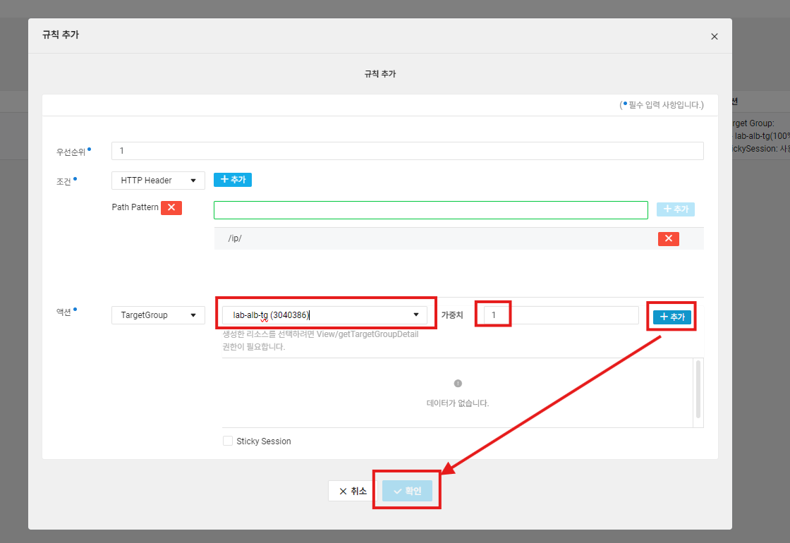
- Health Check 설정
- 타겟 설정
- 타겟 추가에서는 앞에서 생성한 web001, web002을 선택하여 타겟 그룹에 추가
네트워크 로드밸런서 생성
- 웹 서비스의 가용성을 확보하기 위한 로드밸런서를 구성하고자 합니다.
- Services >Networking>‘LoadBalancer’를 선택합니다. 그리고 상단의 로드밸런서 생성을 선택합니다
- 그 후 네트워크 로드밸런서 생성을 클릭합니다
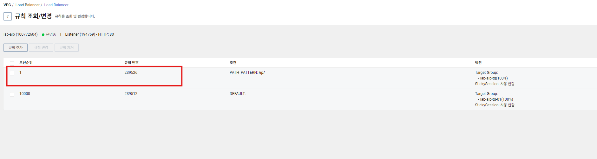
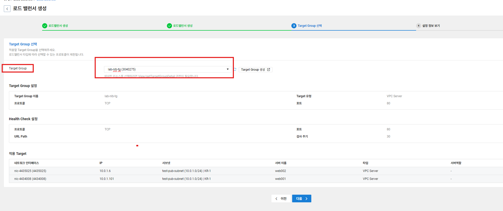
- 결과 확인
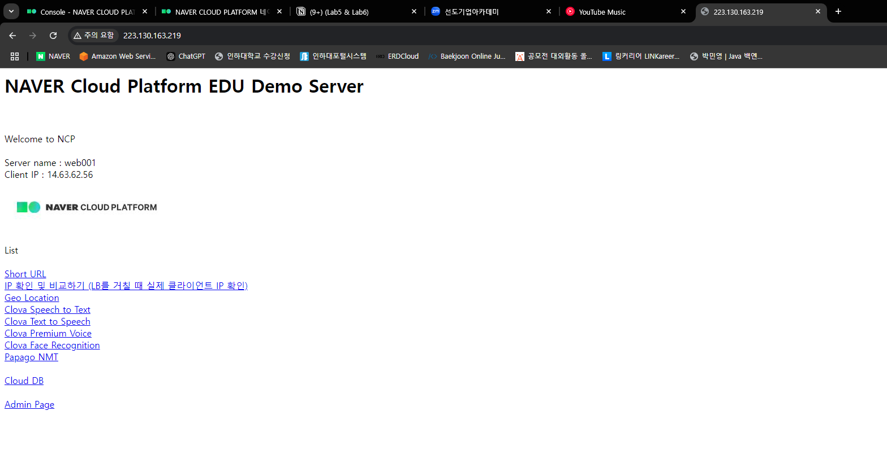
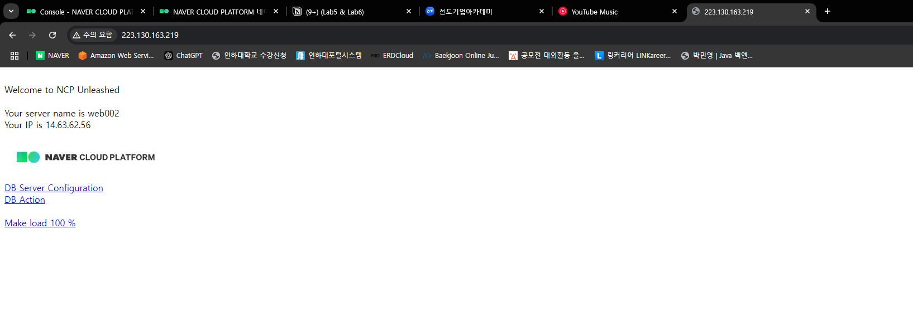
⭐⭐ 네트워크 로드 밸런서는 직접 클라이언트에게 데이터를 전달하기 때문에 리얼 IP가 기록되는 것을 볼 수 있다.
cd /var/log/httpd
tail -10 access_log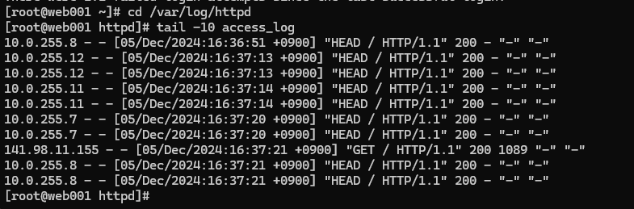
애플리케이션 로드 밸런서
💡 URL 분기 처리가 가능
- 타겟 그룹 생성(Web001만 있음)
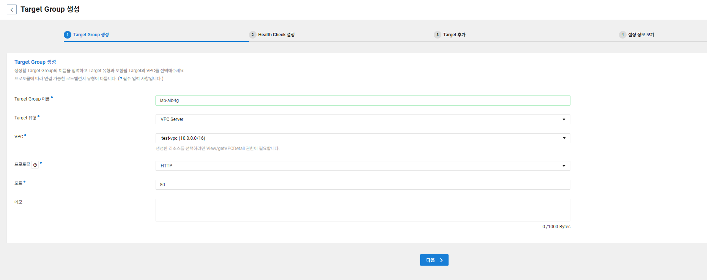
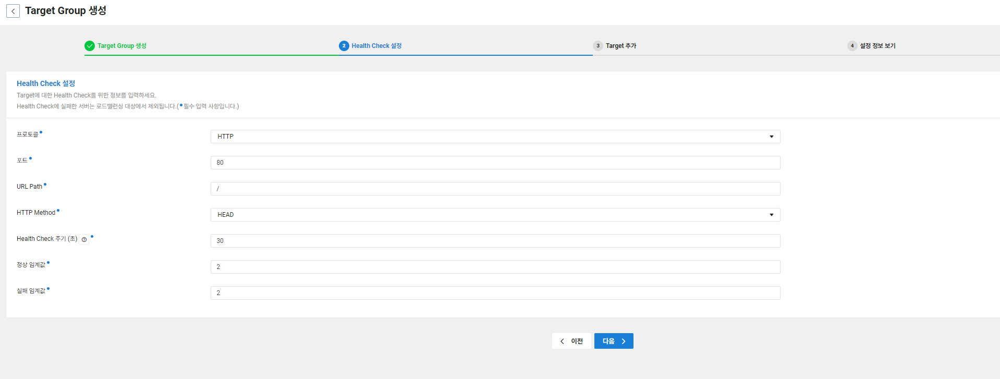
- 타겟 추가에서는 앞에서 생성한 web001만 선택하여 타겟 그룹에 추가합니다
- 타겟 그룹 하나 더 생성(Web001, Web002 2개 있음)
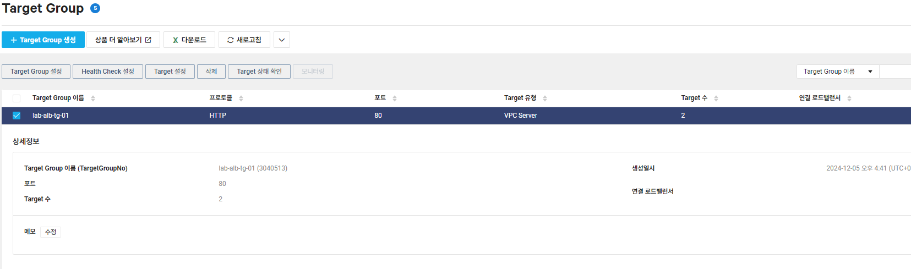
- Services > Networking > ‘LoadBalancer’를 선택합니다. 그리고 상단의 로드밸런서 생성을 선택합니다
- 그 후 어플리케이션 로드밸런서 생성을 클릭합니다
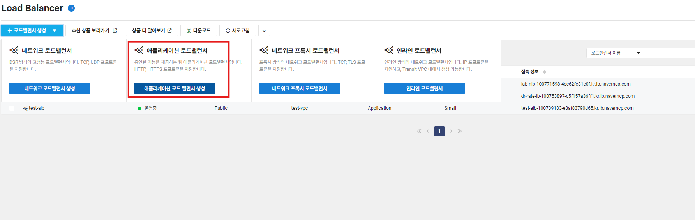
- 타겟 선택(Web001, Web002 둘 다 타겟하는 그룹으로 선택)
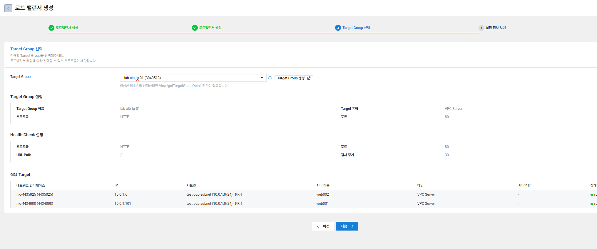
어플리케이션 로드 밸런서 분기 설정
- 하위 디렉토리인 ip디렉토리에 대해서는 lab-alb-ip-tg 로 분기하고자 합니다.
- Services >Networking >‘LoadBalancer’를선택합니다. 선택 후 ‘리스너설정변경’ 클릭
- ‘ListenerNo’를 선택 후 상단의 ‘규칙조회/변경’을 선택합니다.
- 생성되어 있는 우선 순위 선택 후 상단의 규칙 추가를 선택한다.
- PathPattern 선택 후 우측의 ‘추가’를 선택합니다.
/ip/를 입력 후 우측의 +추가를 선택합니다
- TargetGroup에서
lab-alb-ip-tg를 선택하고 가중치는 1, 우측의+추가를 선택 후 하단의 ‘확인’ 버튼 클릭- 이렇게 되면 {공인IP}/ip/ 로 접근하는 경로는 Path Pattern에 의해서 Target Group이
lab-alb-ip-tg, 즉 Web001로만 분기되도록 설정을 한 것이다.
- 이렇게 되면 {공인IP}/ip/ 로 접근하는 경로는 Path Pattern에 의해서 Target Group이
- 그냥 로드 밸런서에 접근하는 경우
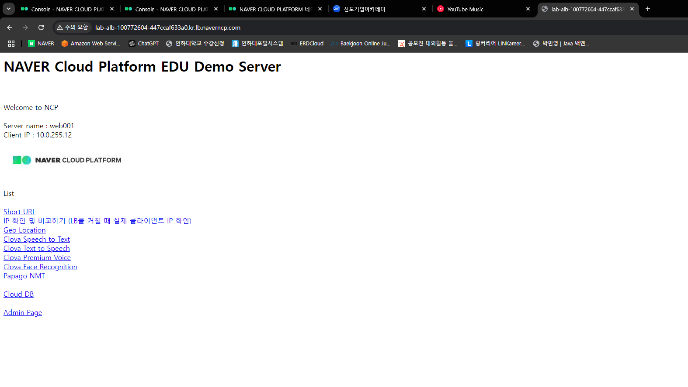
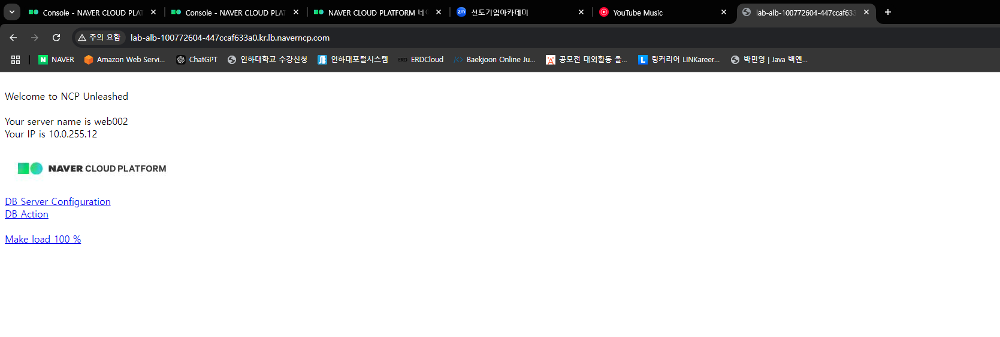
⇒ 설정한 대로 Web001, Web002 둘 다 나온다
/ip/로 접근하는 경우
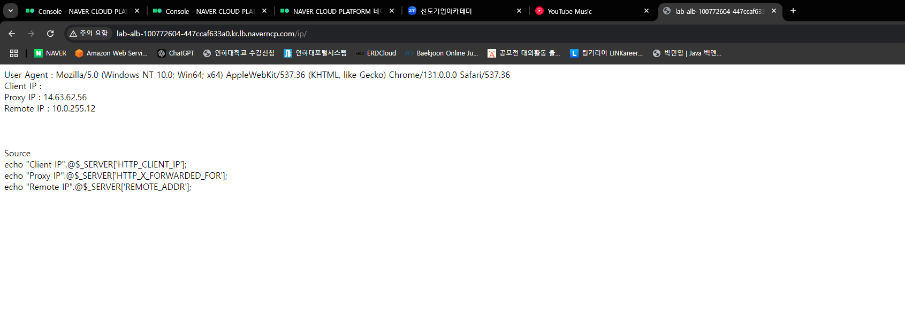
→ Web001 IP만 찍힌다.